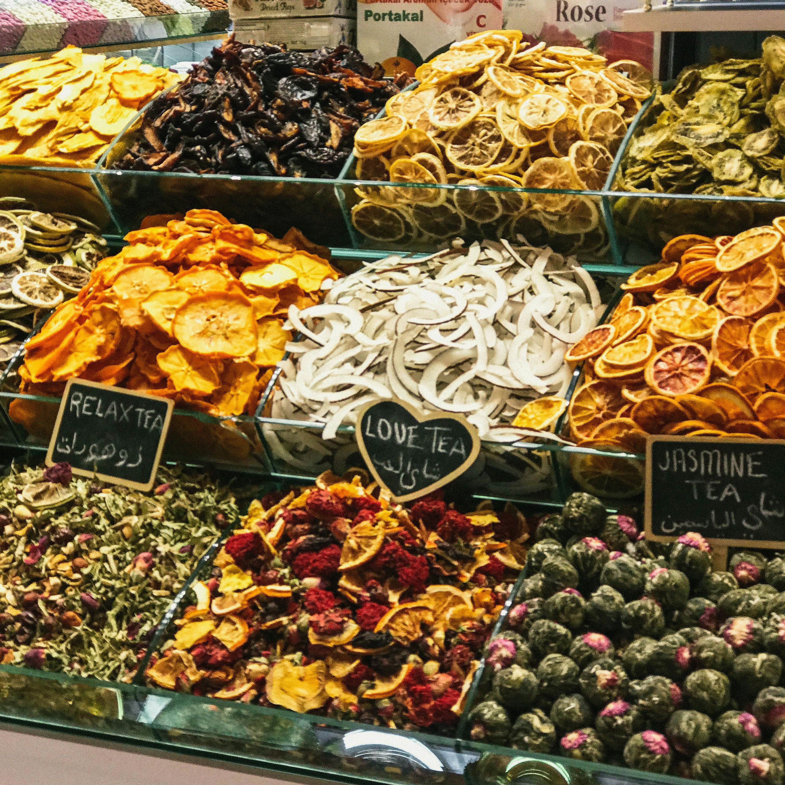

Conservation
What is conservation ?
Conservation has responsible management, protection, and preservation of natural resources, habitats, and ecosystems in order to ensure their sustainability for future generations. Conservation seeks to avert degradation, loss, or destruction of the environment itself as well as destruction of biodiversity. It is defined as the responsible management, protection and preservation of natural resources, habitats, and ecosystems for their sustainable use by future generations.
How to conserve food?
By conserve food we mean using methods of extending its shelf life without compromising its quality. Storage in the right way is paramount; for example refrigerating, freezing for long-term preserves, and drying or canning to keep items fresh for months. Pickling, fermenting, salting are methods used to keep the taste and nutrition of fruit, vegetables, and meats intact. Besides, plan meals, buy only what is necessary and use older ones first to cut down waste. It is proven that good leftovers storage and segregation will go a long way to preserve food as it will not go to waste.
How does this help the enviroment ?
Conserve Natural Resources: Conservation activity incorporates the wise utilization of natural resources such as water, soil, minerals, and so on. It helps in controlling depletion and avoids the scarcity of resources in future while also nourishing a healthy environment.
Our company is targeting the hunger levels in the world and going straight into action afterwards. We based on our sponsors and donations finances and all the help is free. We are going to make this world free of the struggles of hunger!
All over the world, increasing obesity and chronic diseases put an amazing burden on healthcare systems due to the cost of treatment that patients with heart problems and diabetes incur for the management of these highly expensive conditions.Current hunger-related statistics:
People suffering from hunger right now:
Number of children under 5 who die from malnutrition every year:
Percentage of the global population facing food insecurity:
